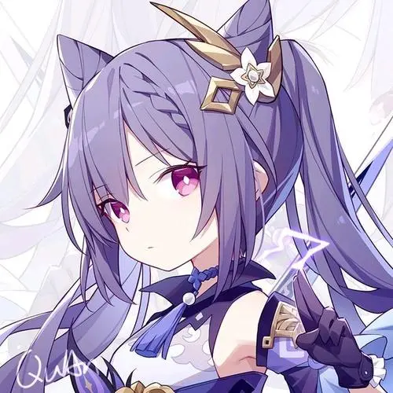
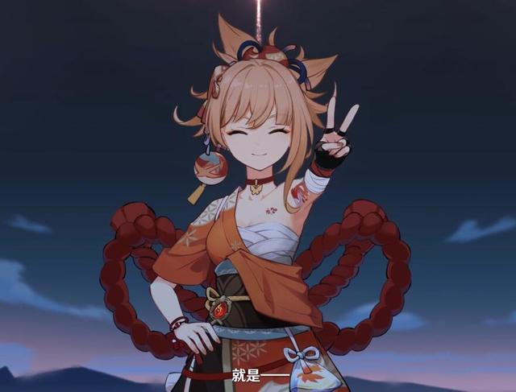

欢迎，高洁而纯真的灵魂
首页博客
纸片人老婆们
这个不用看
关于本站
嗨～，想我了吗？无论何时何地，爱莉希雅永远都会回应你的期待
--「无暇之人」爱莉希雅
神里小姐贵为稻妻名门神里家族的‘公主’，如风雅的雪鹤一般端庄高洁，但又像衔花扣窗的鸟儿一样善良亲切
--「白鹭公主」神里绫华

那位‘玉衡星’虽然不敬仙神，但我觉得她是个相当飒爽的人呢。
--「霆霓快雨」刻晴

将情意与愿望融入绚烂烟花，令短暂的事物变得隽永。宵宫从事这一行的意义，也在于此.
--「鸣神岛的夏天」长野原宵宫